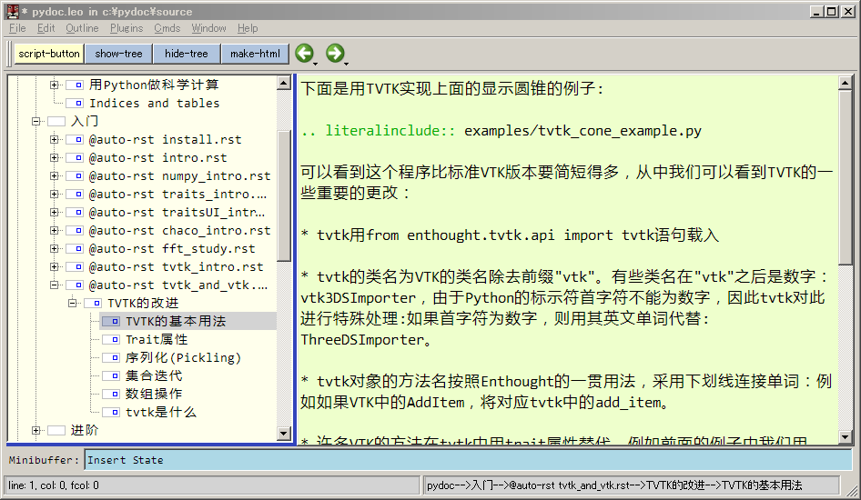
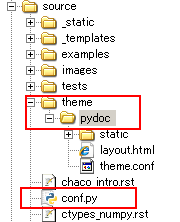
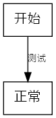

关于本书的编写¶
为了编写此书，我评价了许多写书的软件，最终决定使用Sphinx和reStructuredText作为写书的工具。随着章节的逐渐增加，我越来越觉得当初的选择是正确的。
本书的编写工具¶
本书采用reStructuredText(rst) 格式的文本编写，然后用Sphinx将reStructuredText文件自动转换为html格式的文件。采用Leo管理和组织所有的文档。用proTeXt将latex格式的数学公式转换为PNG图片。
reStructuredText : 一种结构化文本格式，它提供了对写书所需的各种元素的支持。例如章节、链接、格式、图片以及语法高亮等等。
Sphinx : 将一系列reStructuredText文本转换成各种不同的输出格式，并自动制作交叉引用（cross-references)、索引等。也就是说，如果某目录中有一系列的reStructuredText格式的文档， Sphinx可以制作一份组织得非常完美的HTML文件。
Leo : 以树状结构管理文本、代码的编辑器，可以用它来进行数据组织和项目管理。我使用它管理构成本书的所有rst文档、python程序以及图片和笔记。下面是使用Leo编写本书时的一个例子：
编写本书所使用的Leo编辑器的界面
PicPick, Greenshot : 界面截图工具。
问题与解决方案¶
在使用上述工具编写本书时，为了达到完美的效果，我对这些工具做了一些配置和修改的工作。
代码中的注释¶
Sphinx使用Pygments进行代码高亮的处理，在Pygments的缺省样式中，代码注释部分是采用斜体字表示的，斜体的汉字看起来十分别扭，因此需要将缺省样式的斜体改为正体。在conf.py文件中有如下配置：
# The name of the Pygments (syntax highlighting) style to use.
pygments_style = 'sphinx'
它指定pygments使用sphinx样式对代码进行高亮处理，我没有弄明白如何添加自己定义的样式，因此直接手工修改定义此样式的文件：
%Python安装目录%\Lib\site-packages\sphinx\highlighting.py
将其中的Comment的样式改为noitalic：
...
styles.update({
Generic.Output: '#333',
Comment: 'noitalic #408090',
Number: '#208050',
})
...
修改Sphinx的主题¶
为了给文档添加评论功能，必须添加一部分javascript代码，因此需要修改Shpinx的主题。
首先编辑conf.py文件中如下的两个配置：
# The theme to use for HTML and HTML Help pages. Major themes that come with # Sphinx are currently 'default' and 'sphinxdoc'. html_theme = 'pydoc' # Add any paths that contain custom themes here, relative to this directory. html_theme_path = ["./theme"]
然后在conf.py文件所在的目录下创建一个子目录theme，将sphinx安装目录下的themes\sphinxdoc文件夹复制到theme文件夹下，并重命名为pydoc，目录结构如下图所示：
theme文件夹的结构
编辑layout.html文件。此文件是一个模板，Sphinx最终使用此模板生成每个rst文件所对应的html文件。因此我在其中添加了对我自己的css和js文件的引用:
<link type="text/css" href="_static/jquery-ui-1.7.2.custom.css" rel="stylesheet" />
<link type="text/css" href="_static/comments.css" rel="stylesheet" />
<script type="text/javascript" src="_static/jquery-ui-1.7.2.custom.min.js"></script>
<script type="text/javascript" src="_static/pydoc.js"></script>
在theme\pydoc\static目录下添加相应的css和js文件。为了固定html页面左侧的目录栏，可以配置theme\pydoc\theme.conf中的stickysidebar=True，不过好像IE7.0下无法正常显示，因此在css文件中添加如下代码，除了IE6.0以外其它的浏览器(Firefox,IE7, Chrome)都能够正常固定目录栏：
div.sphinxsidebar{ position : fixed; left : 0px; top : 30px; margin-left : 0px !important; }
关闭引号自动转换¶
在输出html的时候，如果使用Sphinx缺省的配置，会对引号进行自动转换：将标准的单引号和双引号转换为unicode中的全角引号。为了关闭此项功能，需要编辑 conf.py，进行如下设置：
html_use_smartypants = False
用latex编写数学公式¶
Sphinx支持将latex编写的数学公式转换为png图片。为了在windows下使用latex，我下载了proTeXt，这个tex软件包的大小有700M左右，安装之后占用1.3G。为了告诉Sphinx工具latex的安装位置，如下修改make.bat文件：
%SPHINXBUILD% -D pngmath_latex="..\latex.exe" -b html %ALLSPHINXOPTS% build/html
然后就可以如下使用latex:
X_k = \sum_{n=0}^{N-1} x_n e^{-{i 2\pi k \frac{n}{N}}} \qquad k = 0,\dots,N-1.
得到的输出图片如下：

Leo的配置¶
Leo的缺省配置用起来很不习惯：它的树状目录在上方，而且字体很小。下面是对Leo的一些修改和配置：
Leo现在可以使用tk和qt两个库。使用tk库的界面用起来不习惯，因此通过在启动Leo时添加参数强制使用qt库的界面：launchLeo.py --gui=qt 。
我个人很喜欢微软雅黑的汉字字体，但是由于雅黑字体的英文不是等宽的，因此用它来编辑代码的话就很不爽了。于是上网找到了一个雅黑和Consolas的复合字体：
YaHei Mono字体下载地址： http://hyry.dip.jp/files/yahei_mono.7z
复制一份leo\config\leoSettings.leo到同一目录，改名为myLeoSettings.leo。用Leo编辑此文件，在目录树中找到节点：qtGui plugin-->@data qt-gui-plugin-style-sheet，修改此样式表中的字体的定义，使用新安装的Yahei Mono字体。
QTextEdit#richTextEdit { ... font-family: Yahei Mono; font-size: 17px; ... }
修改@settings-->Window-->@string initial_split_orientation节点和@settings-->Window-->Options for new windows-->@strings[vertical,horizontal] initial_splitter_orientation节点的值为horizontal。这样目录树和编辑框就是左右分栏的了。
在Leo中用@auto-rst输出rst文件时，会自动的将目录树中的节点名转换为rst文件中的标题。在rst中标题都是由下划线标出的。下划线的长度要求和文本的长度一致。由于Leo采用unicode表示文本，因此汉字的长度为1，但是rst编译器似乎要求汉字的长度为2，因此对于 Leo的配置 这样的标题，rst要求用9个下划线符号标识，而Leo只用6个，造成在编译时出现许多警告信息，为了解决这个问题，编辑leo\core\leoRst.py文件中的underline函数如下，并且将其后的所有len(s)都改为len(ss)：
def underline (self,s,p): ... try: ss = s.encode("gbk") except: try: ss = s.encode("shiftjis") except: ss = s trace = False and not g.unitTesting ...
让Matplotlib显示中文¶
将中文字体文件复制到：
%PythonPath%\Lib\site-packages\matplotlib\mpl-data\fonts\ttf\
下，这里以上一节介绍的Yahei Mono字体为例。
找到Matplotlib的配置文件matplotlibrc，全局配置文件的路径：
%PythonPath%\Lib\site-packages\matplotlib\mpl-data\matplotlibrc
用户配置文件路径：
c:\Documents and Settings\%UserName%\.matplotlib\matplotlibrc
用文本编辑器打开此文件，进行如下编辑：
- 找到设置font.family的行，改为font.family : monospace，注意去掉前面的#号。
- 在下面添加一行：font.monospace : Yahei Mono。
在matplotlib中使用中文字符串时记住要用unicode格式，例如：u"测试中文显示"。
用Matplotlib生成图片¶
matplotlib提供了一个Sphinx的扩展插件，可以使用..plot命令自动生成图片。可是这个插件生成的图片的路径和本书所采用的路径不符合，无法在HTML文件中显示最终生成的图。因此我直接复制下面两个文件：
c:\Python26\Lib\site-packages\matplotlib\sphinxext\plot_directive.py
c:\Python26\Lib\site-packages\matplotlib\sphinxext\only_directives.py
到sourceexts下，命名为plot_directive.py。然后编辑conf.py，修改下面两行：
sys.path.append(os.path.abspath('exts'))
extensions = ['sphinx.ext.autodoc', 'sphinx.ext.doctest',
'sphinx.ext.pngmath', 'plot_directive']
这样就可以载入extsplot_directive.py扩展插件了。然后编辑plot_directive.py文件，使得它的输出符合本书的路径，并且除去大图和PDF输出。
在rst文件中使用：
.. plot:: examples/matplotlib_hist.py
:include-source:
就得到如下的结果：
import matplotlib.pyplot as plt
import numpy as np
x = np.random.randn(1000)
plt.hist( x, 20)
plt.grid()
plt.title(r'Normal: $\mu=%.2f, \sigma=%.2f$'%(x.mean(), x.std()))
plt.show()
用Graphviz绘图¶
Sphinx可以调用Graphviz绘制流程图，首先下载Graphviz的Windows安装包进行安装，假设安装目录为c:\graphviz。
Graphviz的下载地址： http://www.graphviz.org
编辑conf.py配置文件，在 extensions 列表定义的最后添加一项：'sphinx.ext.graphviz'。
如下编辑make.bat文件，配置dot.exe的执行路径：
set SPHINXBUILD=sphinx-build -D graphviz_dot=c:\graphviz\bin\dot.exe
在rst文档中，用如下格式绘制Graphviz图：
.. graphviz::
digraph GraphvizDemo{
node [fontname="Yahei Mono" shape="rect"];
edge [fontname="Yahei Mono" fontsize=10];
node1[label="开始"];
node2[label="正常"];
node1->node2[label="测试"];
}
输出图为:

制作CHM文档¶
Sphinx支持输出为CHM文档格式，只需要运行make htmlhelp即可。但是此命令输出的目录文件(扩展名为.hhc)，却不支持中文。为了解决这个问题，我进行了如下修改：
sphinx的安装目录下找到buildershtmlhelp.py，将其复制一份，改名为htmlhelpcn.py。输出CHM文档的程序都在这里面。
修改builders__init__.py文件，在其最后的BUILTIN_BUILDERS字典定义中添加一行：
'htmlhelpcn': ('htmlhelpcn', 'HTMLHelpBuilder')修改make.bat文件，在其中添加：
if "%1" == "htmlhelpcn" ( %SPHINXBUILD% -b htmlhelpcn %ALLSPHINXOPTS% build/htmlhelpcn echo. echo.Build finished; now you can run HTML Help Workshop with the ^ .hhp project file in build/htmlhelpcn. goto end )
编辑htmlhelpcn.py文件，找到project_template字符串的定义，修改其中的Language定义为Language=0x804。
反复运行make.bat htmlhelpcn命令，根据输出的错误提示修改htmlhelpcn.py，将其中几处编码错误的地方都添加.encode("gb2312")。其中有一处：
f.write(item.encode('ascii', 'xmlcharrefreplace')) # 改为--> f.write(item.encode('gb2312'))
如果在rst文档中给图片添加了中文说明的话，有可能输出的CHM文件中看不到图片。
make.bat htmlhelpcn正常运行之后，运行下面的命令输出制作CHM文件：
"C:\Program Files\HTML Help Workshop\hhc.exe" htmlhelpcn\scipydoc.hhp
CHM中嵌入Flash动画¶
用如下的reStructuredText的 raw 指令可以在html中嵌入Flash动画：
<OBJECT CLASSID="clsid:D27CDB6E-AE6D-11cf-96B8-444553540000" WIDTH="589" HEIGHT="447"
CODEBASE="http://active.macromedia.com/flash5/cabs/swflash.cab#version=7,0,0,0">
<PARAM NAME="movie" VALUE="_images/fft_study_04.swf">
<PARAM NAME="play" VALUE="true">
<PARAM NAME="loop" VALUE="false">
<PARAM NAME="wmode" VALUE="transparent">
<PARAM NAME="quality" VALUE="high">
<EMBED SRC="_images/fft_study_04.swf" width="589" HEIGHT="447" quality="high"
loop="false" wmode="transparent" TYPE="application/x-shockwave-flash"
PLUGINSPAGE=
"http://www.macromedia.com/shockwave/download/index.cgi?P1_Prod_Version=ShockwaveFlash">
</EMBED>
</OBJECT>
由于Html Help Workshop不会将swf文件打包进CHM，因此CHM中看不到flash动画，只需要在嵌入flash动画的html之后添加一条：
<img src="_images/fft_study_04.swf" style="visibility:hidden"/>
这样Html Help Workshop就会把fft_study_04.swf文件添加进去，由于使用隐藏的CSS，页面中也不会把它当作图片显示出来。
制作PDF文档¶
调用make latex命令可以输出为latex格式的文件，然后调用 xelatex scipydoc.tex 即可将其转换为PDF文件，xelatex是proTeXt自带的命令。制作PDF文档时同样有中文无法显示的问题，按照以下步骤解决：
- 编辑文档的配置文件conf.py，在最后的 Options for LaTeX output 定义处，添加如下代码，这段文字将添加到最终输出的tex文件中，这里的Yahei Mono可以修改为你想要的中文字体名：
latex_preamble = r"""
\usepackage{float}
\textwidth 6.5in
\oddsidemargin -0.2in
\evensidemargin -0.2in
\usepackage{ccaption}
\usepackage{fontspec,xunicode,xltxtra}
\setsansfont{Microsoft YaHei}
\setromanfont{Microsoft YaHei}
\setmainfont{Microsoft YaHei}
\setmonofont{Yahei Mono}
\XeTeXlinebreaklocale "zh"
\XeTeXlinebreakskip = 0pt plus 1pt
\renewcommand{\baselinestretch}{1.3}
\setcounter{tocdepth}{3}
\captiontitlefont{\small\sffamily}
\captiondelim{ - }
\renewcommand\today{\number\year年\number\month月\number\day日}
\makeatletter
\renewcommand*\l@subsection{\@dottedtocline{2}{2.0em}{4.0em}}
\renewcommand*\l@subsubsection{\@dottedtocline{3}{3em}{5em}}
\makeatother
\titleformat{\chapter}[display]
{\bfseries\Huge}
{\filleft \Huge 第 \hspace{2 mm} \thechapter \hspace{4 mm} 章}
{4ex}
{\titlerule
\vspace{2ex}%
\filright}
[\vspace{2ex}%
\titlerule]
%\definecolor{VerbatimBorderColor}{rgb}{0.2,0.2,0.2}
\definecolor{VerbatimColor}{rgb}{0.95,0.95,0.95}
""".decode("utf-8")
通过renewcommand命令将输出的PDF文档中的一部分英文修改为中文。
不知何故，在latex_preamble中添加修改插图标题前缀的命令没有作用，因此通过下面的命令在正文中添加转换前缀的renewcommand：
.. raw:: latex
\renewcommand\partname{部分}
\renewcommand{\chaptermark}[1]{\markboth{第 \thechapter\ 章 \hspace{4mm} #1}{}}
\fancyhead[LE,RO]{用Python做科学计算}
\renewcommand{\figurename}{\textsc{图}}
调整conf.py中的其它选项：
latex_paper_size = 'a4' latex_font_size = '11pt' latex_use_modindex = False
运行下面的命令输出PDF文档，使用nonstopmode，即使出现错误也不暂停运行。
xelatex -interaction=nonstopmode scipydoc.tex
还有一些latex配置没有找到如何使用reStructuredText进行设置，因此写了一个Python的小程序读取输出的tex文件，替换其中的一些latex命令：
- 将begin{figure}[htbp]改为begin{figure}[H}，这样能保证图和文字保持tex中的前后关系，而不会对图进行自动排版
- 在\tableofcontents之前添加\renewcommand\contentsname{目 录}，将目录标题的英文改为中文，此段配置在latex_preamble中定义无效
添加PDF封面¶
使用作图软件设计封面图片之后，使用图片转PDF工具将其转换为一个只有一页的PDF文档cover.pdf：
图片转PDF工具下载地址： http://www.softinterface.com
然后使用PDF合并工具将cover.pdf和正文的PDF文件进行合并。我在网络上找了很久，终于找到了下面这个能够维持内部链接和书签的免费的合并工具：
PDF工具PDFsam下载地址： http://www.pdfsam.org
PDFsam提供了界面和命令行方式，界面方式很容易使用，但是为了一个批处理产生最终PDF文档我需要使用命令行方式，下面是使用命令行进行PDF文档合并的批处理程序：
set MERGE=java -jar "c:\Program Files\pdfsam\lib\pdfsam-console-2.2.0e.jar"
%MERGE% -f cover.pdf -f scipydoc.pdf -o %CD%\scipydoc2.pdf concat
- -f参数指定输入的PDF文件名
- -o参数指定输出的PDF文件名，注意必须使用绝对路径，因此这里使用%CD%将相对路径转换为绝对路径。
输出打包的批处理¶
下面是同时输出zip, chm, pdf文件的批处理命令：
rename html scipydoc
"c:\Program Files\7-Zip\7z.exe" a scipydoc.zip scipydoc
rename scipydoc html
"C:\Program Files\HTML Help Workshop\hhc.exe" htmlhelpcn\scipydoc.hhp
copy htmlhelpcn\scipydoc.chm . /y
cd latex
xelatex -interaction=nonstopmode scipydoc.tex
cd ..
copy latex\scipydoc.pdf . /y
HTML的中文搜索¶
由于Sphinx不懂中文分词，因此它所生成的搜索索引文件searchindex.js中的中文单词分的不正确。为了修正这个问题，我写了一个Sphinx扩展chinese_search.py，使用中文分词库smallseg生成索引文件中的中文单词。
smallseg中文分词库地址: http://code.google.com/p/smallseg
下面是这个扩展的完整源程序：
from os import path
import re
import cPickle as pickle
from docutils.nodes import comment, Text, NodeVisitor, SkipNode
from sphinx.util.stemmer import PorterStemmer
from sphinx.util import jsdump, rpartition
from smallseg import SEG
DEBUG = False
word_re = re.compile(r'\w+(?u)')
stopwords = set("""
a and are as at
be but by
for
if in into is it
near no not
of on or
such
that the their then there these they this to
was will with
""".split())
if DEBUG:
testfile = file("testfile.txt", "wb")
class _JavaScriptIndex(object):
"""
The search index as javascript file that calls a function
on the documentation search object to register the index.
"""
PREFIX = 'Search.setIndex('
SUFFIX = ')'
def dumps(self, data):
return self.PREFIX + jsdump.dumps(data) + self.SUFFIX
def loads(self, s):
data = s[len(self.PREFIX):-len(self.SUFFIX)]
if not data or not s.startswith(self.PREFIX) or not \
s.endswith(self.SUFFIX):
raise ValueError('invalid data')
return jsdump.loads(data)
def dump(self, data, f):
f.write(self.dumps(data))
def load(self, f):
return self.loads(f.read())
js_index = _JavaScriptIndex()
class Stemmer(PorterStemmer):
"""
All those porter stemmer implementations look hideous.
make at least the stem method nicer.
"""
def stem(self, word):
word = word.lower()
return word
#return PorterStemmer.stem(self, word, 0, len(word) - 1)
class WordCollector(NodeVisitor):
"""
A special visitor that collects words for the `IndexBuilder`.
"""
def __init__(self, document):
NodeVisitor.__init__(self, document)
self.found_words = []
def dispatch_visit(self, node):
if node.__class__ is comment:
raise SkipNode
if node.__class__ is Text:
words = seg.cut(node.astext().encode("utf8"))
words.reverse()
self.found_words.extend(words)
class IndexBuilder(object):
"""
Helper class that creates a searchindex based on the doctrees
passed to the `feed` method.
"""
formats = {
'jsdump': jsdump,
'pickle': pickle
}
def __init__(self, env):
self.env = env
self._stemmer = Stemmer()
# filename -> title
self._titles = {}
# stemmed word -> set(filenames)
self._mapping = {}
# desctypes -> index
self._desctypes = {}
def load(self, stream, format):
"""Reconstruct from frozen data."""
if isinstance(format, basestring):
format = self.formats[format]
frozen = format.load(stream)
# if an old index is present, we treat it as not existing.
if not isinstance(frozen, dict):
raise ValueError('old format')
index2fn = frozen['filenames']
self._titles = dict(zip(index2fn, frozen['titles']))
self._mapping = {}
for k, v in frozen['terms'].iteritems():
if isinstance(v, int):
self._mapping[k] = set([index2fn[v]])
else:
self._mapping[k] = set(index2fn[i] for i in v)
# no need to load keywords/desctypes
def dump(self, stream, format):
"""Dump the frozen index to a stream."""
if isinstance(format, basestring):
format = self.formats[format]
format.dump(self.freeze(), stream)
def get_modules(self, fn2index):
rv = {}
for name, (doc, _, _, _) in self.env.modules.iteritems():
if doc in fn2index:
rv[name] = fn2index[doc]
return rv
def get_descrefs(self, fn2index):
rv = {}
dt = self._desctypes
for fullname, (doc, desctype) in self.env.descrefs.iteritems():
if doc not in fn2index:
continue
prefix, name = rpartition(fullname, '.')
pdict = rv.setdefault(prefix, {})
try:
i = dt[desctype]
except KeyError:
i = len(dt)
dt[desctype] = i
pdict[name] = (fn2index[doc], i)
return rv
def get_terms(self, fn2index):
rv = {}
for k, v in self._mapping.iteritems():
if len(v) == 1:
fn, = v
if fn in fn2index:
rv[k] = fn2index[fn]
else:
rv[k] = [fn2index[fn] for fn in v if fn in fn2index]
return rv
def freeze(self):
"""Create a usable data structure for serializing."""
filenames = self._titles.keys()
titles = self._titles.values()
fn2index = dict((f, i) for (i, f) in enumerate(filenames))
return dict(
filenames=filenames,
titles=titles,
terms=self.get_terms(fn2index),
descrefs=self.get_descrefs(fn2index),
modules=self.get_modules(fn2index),
desctypes=dict((v, k) for (k, v) in self._desctypes.items()),
)
def prune(self, filenames):
"""Remove data for all filenames not in the list."""
new_titles = {}
for filename in filenames:
if filename in self._titles:
new_titles[filename] = self._titles[filename]
self._titles = new_titles
for wordnames in self._mapping.itervalues():
wordnames.intersection_update(filenames)
def feed(self, filename, title, doctree):
"""Feed a doctree to the index."""
self._titles[filename] = title
visitor = WordCollector(doctree)
doctree.walk(visitor)
def add_term(word, prefix='', stem=self._stemmer.stem):
word = stem(word)
word = word.strip(u"!@#$%^&*()_+-*/\\\";,.[]{}<>")
if len(word) <= 1: return
if word.encode("utf8").isalpha() and len(word) < 3: return
if word.isdigit(): return
if word in stopwords: return
try:
float(word)
return
except:
pass
if DEBUG:
testfile.write("%s\n" % word.encode("utf8"))
self._mapping.setdefault(prefix + word, set()).add(filename)
words = seg.cut(title.encode("utf8"))
for word in words:
add_term(word)
for word in visitor.found_words:
add_term(word)
def load_indexer(self):
def func(docnames):
print "############### CHINESE INDEXER ###############"
self.indexer = IndexBuilder(self.env)
keep = set(self.env.all_docs) - set(docnames)
try:
f = open(path.join(self.outdir, self.searchindex_filename), 'rb')
try:
self.indexer.load(f, self.indexer_format)
finally:
f.close()
except (IOError, OSError, ValueError):
if keep:
self.warn('search index couldn\'t be loaded, but not all '
'documents will be built: the index will be '
'incomplete.')
# delete all entries for files that will be rebuilt
self.indexer.prune(keep)
return func
def builder_inited(app):
if app.builder.name == 'html':
print "****************************"
global seg
seg = SEG()
app.builder.load_indexer = load_indexer(app.builder)
def setup(app):
app.connect('builder-inited', builder_inited)
PDF的页码和图编号参照¶
Sphinx生成的tex文件没有使用\label和\ref进行编号引用，而是生成一些链接，这些链接虽然方便电子版的阅读，可是打印出来之后就毫无用处了，因此我写了一个扩展latex_ref.py为最终生成的PDF添加编号引用功能，这个扩展添加了三个role：tlabel, tref, tpageref，分别对应tex的\label, \ref, \pageref。
下面是完整的源程序：
# -*- coding: utf-8 -*-
from docutils import nodes, utils
class tref(nodes.Inline, nodes.TextElement):
pass
class tlabel(nodes.Inline, nodes.TextElement):
pass
class tpageref(nodes.Inline, nodes.TextElement):
pass
def tref_role(role, rawtext, text, lineno, inliner, options={}, content=[]):
data = text.split(",")
if u"图" in data[0]:
name = u"图"
pos = data[0][0]
ref = data[1]
return [tref(name=name, ref=ref, pos=pos)], []
return [],[]
def tlabel_role(role, rawtext, text, lineno, inliner, options={}, content=[]):
return [tlabel(latex=text)], []
def tpageref_role(role, rawtext, text, lineno, inliner, options={}, content=[]):
return [tpageref(latex=text)], []
def latex_visit_ref(self, node):
self.body.append(r"%s\ref{%s}" % (node['name'], node['ref']))
raise nodes.SkipNode
def html_visit_ref(self, node):
self.body.append(r'<a href="#%s">%s%s</a>' % (node['ref'], node['pos'], node['name']))
raise nodes.SkipNode
def latex_visit_label(self, node):
self.body.append(r"\label{%s}" % node['latex'])
raise nodes.SkipNode
def latex_visit_pageref(self, node):
self.body.append(r"\pageref{%s}" % node['latex'])
raise nodes.SkipNode
def empty_visit(self, node):
raise nodes.SkipNode
def setup(app):
app.add_node(tref,latex=(latex_visit_ref, None),text=(empty_visit, None),html=(html_visit_ref, None))
app.add_node(tlabel,latex=(latex_visit_label, None),text=(empty_visit, None),html=(empty_visit, None))
app.add_node(tpageref,latex=(latex_visit_pageref, None),text=(empty_visit, None),html=(empty_visit, None))
app.add_role('tref', tref_role)
app.add_role('tlabel', tlabel_role)
app.add_role('tpageref', tpageref_role)
ReST使用心得¶
添加图的编号和标题¶
使用figure命令插入带编号和标题的插图：
.. _pythonxyhome:
.. figure:: images/pythonxy_home.png
Python(x,y)的启动画面
PDF文字包围图片¶
当给figure添加figwidth和align属性之后，在生成的latex文档中，将使用wrapfigure生成图。为了和前面的段落之间添加一个换行符，使用一个斜杠空格。
\
.. _fig-traitsUIintro03:
.. figure:: images/traitsUI_intro_03.png
:figwidth: 4cm
:align: left
通过label和tooltip手工指定属性编辑器的标签和说明
插入大段代码¶
小段代码演示可以直接放到rst文件中，但是大段的代码我希望放在单独的文件中，然后在rst文件中引用相应的代码文件。这样我就可以在Leo中单独做一个目录存放所有的代码文件，编辑其中的代码之后，直接输出到html文件中。
在Sphinx中可以使用如下的格式嵌入外部文件中的代码段：
.. literalinclude:: examples/tvtk_cone.example.py
.. literalinclude:: example.c
:language: c
未解决的问题¶
数学公式输出不正确
有时候数学公式的输出不正确，某些数学符号不能显示，可是多试几次之后就正常了，不知道是什么原因。
Leo不能配置目录树和编辑框的宽度比例
每次Leo开启之后目录树和编辑框的宽度是相等的，看上去很不协调。而且修改mySettings.leo中的相关配置也不能解决，不明白是什么问题。目前的解决方法是添加两个工具按钮：show-tree和hide-tree，这样点击一下show-tree就会将目录树和编辑框改为1:3的比例；而点击hide-tree则能隐藏目录树：
@button show tree
g.es(c.frame.resizePanesToRatio(0.25,0.7))
@button hide tree
g.es(c.frame.resizePanesToRatio(0.0,0.7))
用Matplotlib自动生成图片无法输出到PDF中
可能需要修改 plot_directive.py 文件，使得它能正确的在latex模式下输出图片。
PDF文档的Bookmarks深度
要想正确生成的PDF文档的Bookmarks，似乎需要对tex文档进行两次编译。